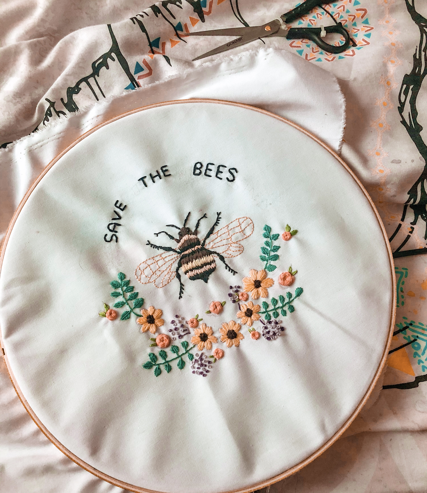
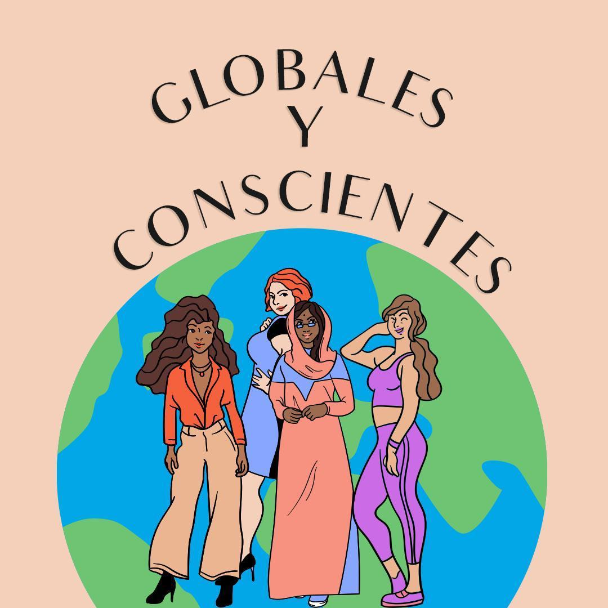

Hi! I'm Daniela Hernández

Hi! I'm Daniela Hernández

I am a Journalism, Media and Publishing student at Oxford Brookes University.

After I finished school in 2016, I took a gap year and came to Europe to improve my English, experience the world outside Chile and decide whether journalism was for me or not.
Today my aim is to work as a journalist covering environmental issues 🌍.


I see the study and practice of journalism as an essential weapon in the fight against injustice. One of the greatest opportunities I have had is to write articles for the Oxford Mail, which has given me the oportunity to learn much more about this career.


I love arts! During my free time I like to dance, sing, paint and during the pandemic I learned how to embroider.
Also as a hobbie, I have started a podcast where I talk about current affairs and I invite women from different backgrounds to participate as speakers.

The title of the podcast means "Global and Conscious", most of my content is in Spanish (sorry!) as it is my first language. I am also learning Italian and French.
I have a Youtube and IGTV channel . the topics I discuss are varied, including my travel experiences, feminism, film reviews, environment and my experience as an international student in the UK.
My university experience has been great so far, being the president of the latino society has helped me to connect with my roots and appreciate my culture even more 🗿🥘🍹.

I love to travel and I would like to keep learning about different cultures as much as possible!